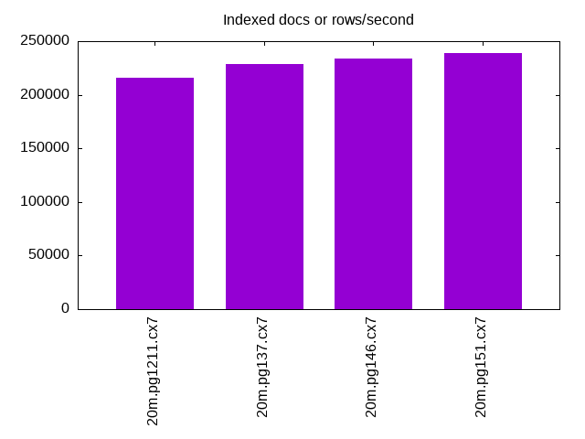
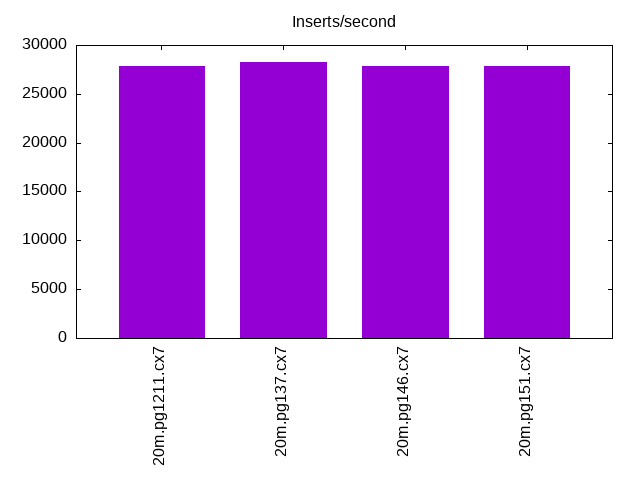
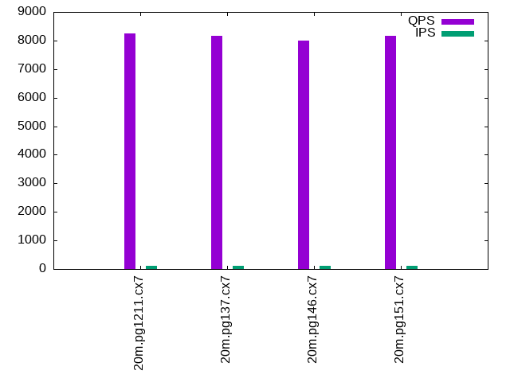
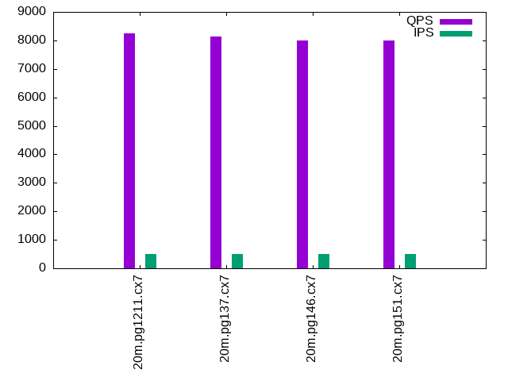
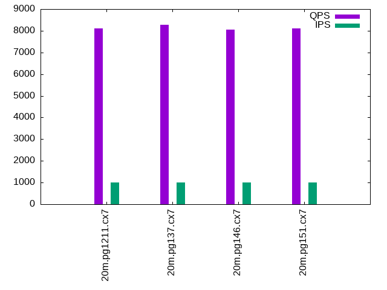

This is a report for the insert benchmark with 20M docs and 1 client(s). It is generated by scripts (bash, awk, sed) and Tufte might not be impressed. An overview of the insert benchmark is here and a short update is here. Below, by DBMS, I mean DBMS+version.config. An example is my8020.c10b40 where my means MySQL, 8020 is version 8.0.20 and c10b40 is the name for the configuration file.
The test server has 8 AMD cores, 16G RAM and an NVMe SSD. It is described here. The benchmark was run with 1 clients and there were 1 or 2 connections per client (1 for queries, 1 for inserts). The benchmark loads 20M rows without secondary indexes, creates secondary indexes, loads another 20M rows then does 3 read+write tests for one hour each that do queries as fast as possible with 100, 500 and then 1000 writes/second/client concurrent with the queries. The database is cached by the storage engine and the only IO is for writes. Clients and the DBMS share one server. The per-database configs are in the per-database subdirectories here.
The tested DBMS are:
The numbers are inserts/s for l.i0 and l.i1, indexed docs (or rows) /s for l.x and queries/s for q*.2. The values are the average rate over the entire test for inserts (IPS) and queries (QPS). The range of values for IPS and QPS is split into 3 parts: bottom 25%, middle 50%, top 25%. Values in the bottom 25% have a red background, values in the top 25% have a green background and values in the middle have no color. A gray background is used for values that can be ignored because the DBMS did not sustain the target insert rate. Red backgrounds are not used when the minimum value is within 80% of the max value.
| dbms | l.i0 | l.x | l.i1 | q100.1 | q500.1 | q1000.1 |
|---|---|---|---|---|---|---|
| 20m.pg1211.cx7 | 71428 | 216129 | 27894 | 8250 | 8238 | 8102 |
| 20m.pg137.cx7 | 72464 | 228409 | 28248 | 8153 | 8129 | 8288 |
| 20m.pg146.cx7 | 69686 | 233721 | 27816 | 8010 | 7985 | 8061 |
| 20m.pg151.cx7 | 72202 | 239286 | 27855 | 8152 | 7984 | 8101 |
This lists the average rate of inserts/s for the tests that do inserts concurrent with queries. For such tests the query rate is listed in the table above. The read+write tests are setup so that the insert rate should match the target rate every second. Cells that are not at least 95% of the target have a red background to indicate a failure to satisfy the target.
| dbms | q100.1 | q500.1 | q1000.1 |
|---|---|---|---|
| pg1211.cx7 | 100 | 499 | 999 |
| pg137.cx7 | 100 | 499 | 998 |
| pg146.cx7 | 100 | 499 | 998 |
| pg151.cx7 | 100 | 499 | 998 |
| target | 100 | 500 | 1000 |
l.i0: load without secondary indexes. Graphs for performance per 1-second interval are here.
Average throughput:
Insert response time histogram: each cell has the percentage of responses that take <= the time in the header and max is the max response time in seconds. For the max column values in the top 25% of the range have a red background and in the bottom 25% of the range have a green background. The red background is not used when the min value is within 80% of the max value.
| dbms | 256us | 1ms | 4ms | 16ms | 64ms | 256ms | 1s | 4s | 16s | gt | max |
|---|---|---|---|---|---|---|---|---|---|---|---|
| pg1211.cx7 | 100.000 | 0.004 | |||||||||
| pg137.cx7 | 100.000 | 0.004 | |||||||||
| pg146.cx7 | 100.000 | 0.004 | |||||||||
| pg151.cx7 | 100.000 | 0.004 |
Performance metrics for the DBMS listed above. Some are normalized by throughput, others are not. Legend for results is here.
ips qps rps rmbps wps wmbps rpq rkbpq wpi wkbpi csps cpups cspq cpupq dbgb1 dbgb2 rss maxop p50 p99 tag 71428 0 0 0.0 142.2 30.0 0.000 0.000 0.002 0.430 8833 24.2 0.124 27 1.9 5.2 0.0 0.004 71551 69519 20m.pg1211.cx7 72464 0 0 0.0 145.0 30.6 0.000 0.000 0.002 0.433 8982 23.6 0.124 26 1.9 5.2 0.0 0.004 72918 70319 20m.pg137.cx7 69686 0 0 0.0 139.0 29.4 0.000 0.000 0.002 0.432 8654 23.3 0.124 27 1.9 5.2 0.0 0.004 69650 67483 20m.pg146.cx7 72202 0 0 0.0 144.4 30.5 0.000 0.000 0.002 0.433 8969 22.8 0.124 25 1.9 5.2 0.0 0.004 72717 69718 20m.pg151.cx7
l.x: create secondary indexes.
Average throughput:
Performance metrics for the DBMS listed above. Some are normalized by throughput, others are not. Legend for results is here.
ips qps rps rmbps wps wmbps rpq rkbpq wpi wkbpi csps cpups cspq cpupq dbgb1 dbgb2 rss maxop p50 p99 tag 216129 0 0 0.0 249.4 60.5 0.000 0.000 0.001 0.287 943 11.7 0.004 4 3.7 8.6 0.0 0.004 NA NA 20m.pg1211.cx7 228409 0 0 0.0 236.7 57.5 0.000 0.000 0.001 0.258 966 12.2 0.004 4 3.7 8.6 0.0 0.004 NA NA 20m.pg137.cx7 233721 0 0 0.0 241.7 58.6 0.000 0.000 0.001 0.257 937 12.1 0.004 4 3.7 8.6 0.0 0.003 NA NA 20m.pg146.cx7 239286 0 0 0.0 215.6 51.2 0.000 0.000 0.001 0.219 960 12.2 0.004 4 3.7 8.6 0.0 0.004 NA NA 20m.pg151.cx7
l.i1: continue load after secondary indexes created. Graphs for performance per 1-second interval are here.
Average throughput:
Insert response time histogram: each cell has the percentage of responses that take <= the time in the header and max is the max response time in seconds. For the max column values in the top 25% of the range have a red background and in the bottom 25% of the range have a green background. The red background is not used when the min value is within 80% of the max value.
| dbms | 256us | 1ms | 4ms | 16ms | 64ms | 256ms | 1s | 4s | 16s | gt | max |
|---|---|---|---|---|---|---|---|---|---|---|---|
| pg1211.cx7 | 99.988 | 0.008 | 0.004 | 0.041 | |||||||
| pg137.cx7 | 99.984 | 0.011 | 0.004 | nonzero | 0.073 | ||||||
| pg146.cx7 | 99.986 | 0.010 | 0.003 | 0.041 | |||||||
| pg151.cx7 | 99.977 | 0.012 | 0.011 | 0.057 |
Performance metrics for the DBMS listed above. Some are normalized by throughput, others are not. Legend for results is here.
ips qps rps rmbps wps wmbps rpq rkbpq wpi wkbpi csps cpups cspq cpupq dbgb1 dbgb2 rss maxop p50 p99 tag 27894 0 0 0.0 263.0 46.3 0.000 0.000 0.009 1.701 7124 19.2 0.255 55 8.2 17.3 0.0 0.041 28543 19878 20m.pg1211.cx7 28248 0 0 0.0 257.8 50.2 0.000 0.000 0.009 1.821 7242 18.8 0.256 53 8.2 17.9 0.0 0.073 28968 20228 20m.pg137.cx7 27816 0 0 0.0 233.7 47.2 0.000 0.000 0.008 1.738 7164 18.1 0.258 52 8.2 18.5 0.0 0.041 28469 20122 20m.pg146.cx7 27855 0 0 0.0 231.2 47.8 0.000 0.000 0.008 1.757 7141 18.1 0.256 52 8.2 18.6 0.0 0.057 28568 18678 20m.pg151.cx7
q100.1: range queries with 100 insert/s per client. Graphs for performance per 1-second interval are here.
Average throughput:
Query response time histogram: each cell has the percentage of responses that take <= the time in the header and max is the max response time in seconds. For max values in the top 25% of the range have a red background and in the bottom 25% of the range have a green background. The red background is not used when the min value is within 80% of the max value.
| dbms | 256us | 1ms | 4ms | 16ms | 64ms | 256ms | 1s | 4s | 16s | gt | max |
|---|---|---|---|---|---|---|---|---|---|---|---|
| pg1211.cx7 | 99.928 | 0.071 | nonzero | nonzero | 0.005 | ||||||
| pg137.cx7 | 99.934 | 0.066 | nonzero | nonzero | 0.005 | ||||||
| pg146.cx7 | 99.935 | 0.065 | nonzero | 0.004 | |||||||
| pg151.cx7 | 99.947 | 0.053 | nonzero | nonzero | 0.005 |
Insert response time histogram: each cell has the percentage of responses that take <= the time in the header and max is the max response time in seconds. For max values in the top 25% of the range have a red background and in the bottom 25% of the range have a green background. The red background is not used when the min value is within 80% of the max value.
| dbms | 256us | 1ms | 4ms | 16ms | 64ms | 256ms | 1s | 4s | 16s | gt | max |
|---|---|---|---|---|---|---|---|---|---|---|---|
| pg1211.cx7 | 99.833 | 0.167 | 0.006 | ||||||||
| pg137.cx7 | 99.861 | 0.139 | 0.006 | ||||||||
| pg146.cx7 | 99.917 | 0.083 | 0.006 | ||||||||
| pg151.cx7 | 99.875 | 0.125 | 0.006 |
Performance metrics for the DBMS listed above. Some are normalized by throughput, others are not. Legend for results is here.
ips qps rps rmbps wps wmbps rpq rkbpq wpi wkbpi csps cpups cspq cpupq dbgb1 dbgb2 rss maxop p50 p99 tag 100 8250 0 0.0 205.1 5.3 0.000 0.000 2.055 54.664 31812 13.3 3.856 129 8.2 12.6 0.0 0.005 7767 7669 20m.pg1211.cx7 100 8153 0 0.0 202.2 4.6 0.000 0.000 2.026 46.902 31442 13.3 3.856 131 8.2 11.9 0.0 0.005 7735 7623 20m.pg137.cx7 100 8010 0 0.0 203.5 4.7 0.000 0.000 2.039 48.271 30854 13.1 3.852 131 8.2 13.8 0.0 0.004 7687 7590 20m.pg146.cx7 100 8152 0 0.0 204.5 4.7 0.000 0.000 2.049 48.243 31367 13.1 3.848 129 8.2 13.9 0.0 0.005 7639 7542 20m.pg151.cx7
q500.1: range queries with 500 insert/s per client. Graphs for performance per 1-second interval are here.
Average throughput:
Query response time histogram: each cell has the percentage of responses that take <= the time in the header and max is the max response time in seconds. For max values in the top 25% of the range have a red background and in the bottom 25% of the range have a green background. The red background is not used when the min value is within 80% of the max value.
| dbms | 256us | 1ms | 4ms | 16ms | 64ms | 256ms | 1s | 4s | 16s | gt | max |
|---|---|---|---|---|---|---|---|---|---|---|---|
| pg1211.cx7 | 99.949 | 0.051 | nonzero | 0.003 | |||||||
| pg137.cx7 | 99.939 | 0.060 | nonzero | nonzero | 0.005 | ||||||
| pg146.cx7 | 99.946 | 0.053 | nonzero | nonzero | 0.005 | ||||||
| pg151.cx7 | 99.953 | 0.047 | nonzero | nonzero | 0.006 |
Insert response time histogram: each cell has the percentage of responses that take <= the time in the header and max is the max response time in seconds. For max values in the top 25% of the range have a red background and in the bottom 25% of the range have a green background. The red background is not used when the min value is within 80% of the max value.
| dbms | 256us | 1ms | 4ms | 16ms | 64ms | 256ms | 1s | 4s | 16s | gt | max |
|---|---|---|---|---|---|---|---|---|---|---|---|
| pg1211.cx7 | 99.881 | 0.119 | 0.008 | ||||||||
| pg137.cx7 | 99.919 | 0.081 | 0.008 | ||||||||
| pg146.cx7 | 99.856 | 0.144 | 0.008 | ||||||||
| pg151.cx7 | 99.817 | 0.183 | 0.008 |
Performance metrics for the DBMS listed above. Some are normalized by throughput, others are not. Legend for results is here.
ips qps rps rmbps wps wmbps rpq rkbpq wpi wkbpi csps cpups cspq cpupq dbgb1 dbgb2 rss maxop p50 p99 tag 499 8238 0 0.0 351.7 12.4 0.000 0.000 0.704 25.444 31883 13.7 3.870 133 8.7 12.0 0.0 0.003 7719 7608 20m.pg1211.cx7 499 8129 0 0.0 355.5 12.5 0.000 0.000 0.712 25.565 31473 13.9 3.872 137 8.7 11.9 0.0 0.005 7687 7575 20m.pg137.cx7 499 7985 0 0.0 357.3 11.8 0.000 0.000 0.716 24.129 30879 13.5 3.867 135 8.7 12.7 0.0 0.005 7639 7543 20m.pg146.cx7 499 7984 0 0.0 357.0 11.8 0.000 0.000 0.715 24.146 30841 13.4 3.863 134 8.7 12.7 0.0 0.006 7575 7480 20m.pg151.cx7
q1000.1: range queries with 1000 insert/s per client. Graphs for performance per 1-second interval are here.
Average throughput:
Query response time histogram: each cell has the percentage of responses that take <= the time in the header and max is the max response time in seconds. For max values in the top 25% of the range have a red background and in the bottom 25% of the range have a green background. The red background is not used when the min value is within 80% of the max value.
| dbms | 256us | 1ms | 4ms | 16ms | 64ms | 256ms | 1s | 4s | 16s | gt | max |
|---|---|---|---|---|---|---|---|---|---|---|---|
| pg1211.cx7 | 99.934 | 0.066 | nonzero | nonzero | 0.005 | ||||||
| pg137.cx7 | 99.934 | 0.065 | nonzero | nonzero | 0.005 | ||||||
| pg146.cx7 | 99.946 | 0.054 | nonzero | nonzero | 0.005 | ||||||
| pg151.cx7 | 99.952 | 0.047 | nonzero | nonzero | 0.005 |
Insert response time histogram: each cell has the percentage of responses that take <= the time in the header and max is the max response time in seconds. For max values in the top 25% of the range have a red background and in the bottom 25% of the range have a green background. The red background is not used when the min value is within 80% of the max value.
| dbms | 256us | 1ms | 4ms | 16ms | 64ms | 256ms | 1s | 4s | 16s | gt | max |
|---|---|---|---|---|---|---|---|---|---|---|---|
| pg1211.cx7 | 97.451 | 2.518 | 0.031 | 0.043 | |||||||
| pg137.cx7 | 97.731 | 2.249 | 0.021 | 0.047 | |||||||
| pg146.cx7 | 97.996 | 1.992 | 0.013 | 0.047 | |||||||
| pg151.cx7 | 98.074 | 1.908 | 0.018 | 0.044 |
Performance metrics for the DBMS listed above. Some are normalized by throughput, others are not. Legend for results is here.
ips qps rps rmbps wps wmbps rpq rkbpq wpi wkbpi csps cpups cspq cpupq dbgb1 dbgb2 rss maxop p50 p99 tag 999 8102 7 0.1 406.1 19.0 0.001 0.008 0.407 19.483 31537 15.1 3.893 149 10.6 14.6 0.0 0.005 7751 7622 20m.pg1211.cx7 998 8288 7 0.1 408.1 19.1 0.001 0.008 0.409 19.568 32245 14.8 3.891 143 10.6 14.6 0.0 0.005 7767 7623 20m.pg137.cx7 998 8061 7 0.1 438.3 17.5 0.001 0.008 0.439 17.941 31324 14.6 3.886 145 10.6 15.4 0.0 0.005 7687 7559 20m.pg146.cx7 998 8101 7 0.1 437.7 17.5 0.001 0.008 0.438 17.935 31448 14.4 3.882 142 10.6 15.4 0.0 0.005 7655 7513 20m.pg151.cx7
l.i0: load without secondary indexes
Performance metrics for all DBMS, not just the ones listed above. Some are normalized by throughput, others are not. Legend for results is here.
ips qps rps rmbps wps wmbps rpq rkbpq wpi wkbpi csps cpups cspq cpupq dbgb1 dbgb2 rss maxop p50 p99 tag 71428 0 0 0.0 142.2 30.0 0.000 0.000 0.002 0.430 8833 24.2 0.124 27 1.9 5.2 0.0 0.004 71551 69519 20m.pg1211.cx7 72464 0 0 0.0 145.0 30.6 0.000 0.000 0.002 0.433 8982 23.6 0.124 26 1.9 5.2 0.0 0.004 72918 70319 20m.pg137.cx7 69686 0 0 0.0 139.0 29.4 0.000 0.000 0.002 0.432 8654 23.3 0.124 27 1.9 5.2 0.0 0.004 69650 67483 20m.pg146.cx7 72202 0 0 0.0 144.4 30.5 0.000 0.000 0.002 0.433 8969 22.8 0.124 25 1.9 5.2 0.0 0.004 72717 69718 20m.pg151.cx7
l.x: create secondary indexes
Performance metrics for all DBMS, not just the ones listed above. Some are normalized by throughput, others are not. Legend for results is here.
ips qps rps rmbps wps wmbps rpq rkbpq wpi wkbpi csps cpups cspq cpupq dbgb1 dbgb2 rss maxop p50 p99 tag 216129 0 0 0.0 249.4 60.5 0.000 0.000 0.001 0.287 943 11.7 0.004 4 3.7 8.6 0.0 0.004 NA NA 20m.pg1211.cx7 228409 0 0 0.0 236.7 57.5 0.000 0.000 0.001 0.258 966 12.2 0.004 4 3.7 8.6 0.0 0.004 NA NA 20m.pg137.cx7 233721 0 0 0.0 241.7 58.6 0.000 0.000 0.001 0.257 937 12.1 0.004 4 3.7 8.6 0.0 0.003 NA NA 20m.pg146.cx7 239286 0 0 0.0 215.6 51.2 0.000 0.000 0.001 0.219 960 12.2 0.004 4 3.7 8.6 0.0 0.004 NA NA 20m.pg151.cx7
l.i1: continue load after secondary indexes created
Performance metrics for all DBMS, not just the ones listed above. Some are normalized by throughput, others are not. Legend for results is here.
ips qps rps rmbps wps wmbps rpq rkbpq wpi wkbpi csps cpups cspq cpupq dbgb1 dbgb2 rss maxop p50 p99 tag 27894 0 0 0.0 263.0 46.3 0.000 0.000 0.009 1.701 7124 19.2 0.255 55 8.2 17.3 0.0 0.041 28543 19878 20m.pg1211.cx7 28248 0 0 0.0 257.8 50.2 0.000 0.000 0.009 1.821 7242 18.8 0.256 53 8.2 17.9 0.0 0.073 28968 20228 20m.pg137.cx7 27816 0 0 0.0 233.7 47.2 0.000 0.000 0.008 1.738 7164 18.1 0.258 52 8.2 18.5 0.0 0.041 28469 20122 20m.pg146.cx7 27855 0 0 0.0 231.2 47.8 0.000 0.000 0.008 1.757 7141 18.1 0.256 52 8.2 18.6 0.0 0.057 28568 18678 20m.pg151.cx7
q100.1: range queries with 100 insert/s per client
Performance metrics for all DBMS, not just the ones listed above. Some are normalized by throughput, others are not. Legend for results is here.
ips qps rps rmbps wps wmbps rpq rkbpq wpi wkbpi csps cpups cspq cpupq dbgb1 dbgb2 rss maxop p50 p99 tag 100 8250 0 0.0 205.1 5.3 0.000 0.000 2.055 54.664 31812 13.3 3.856 129 8.2 12.6 0.0 0.005 7767 7669 20m.pg1211.cx7 100 8153 0 0.0 202.2 4.6 0.000 0.000 2.026 46.902 31442 13.3 3.856 131 8.2 11.9 0.0 0.005 7735 7623 20m.pg137.cx7 100 8010 0 0.0 203.5 4.7 0.000 0.000 2.039 48.271 30854 13.1 3.852 131 8.2 13.8 0.0 0.004 7687 7590 20m.pg146.cx7 100 8152 0 0.0 204.5 4.7 0.000 0.000 2.049 48.243 31367 13.1 3.848 129 8.2 13.9 0.0 0.005 7639 7542 20m.pg151.cx7
q500.1: range queries with 500 insert/s per client
Performance metrics for all DBMS, not just the ones listed above. Some are normalized by throughput, others are not. Legend for results is here.
ips qps rps rmbps wps wmbps rpq rkbpq wpi wkbpi csps cpups cspq cpupq dbgb1 dbgb2 rss maxop p50 p99 tag 499 8238 0 0.0 351.7 12.4 0.000 0.000 0.704 25.444 31883 13.7 3.870 133 8.7 12.0 0.0 0.003 7719 7608 20m.pg1211.cx7 499 8129 0 0.0 355.5 12.5 0.000 0.000 0.712 25.565 31473 13.9 3.872 137 8.7 11.9 0.0 0.005 7687 7575 20m.pg137.cx7 499 7985 0 0.0 357.3 11.8 0.000 0.000 0.716 24.129 30879 13.5 3.867 135 8.7 12.7 0.0 0.005 7639 7543 20m.pg146.cx7 499 7984 0 0.0 357.0 11.8 0.000 0.000 0.715 24.146 30841 13.4 3.863 134 8.7 12.7 0.0 0.006 7575 7480 20m.pg151.cx7
q1000.1: range queries with 1000 insert/s per client
Performance metrics for all DBMS, not just the ones listed above. Some are normalized by throughput, others are not. Legend for results is here.
ips qps rps rmbps wps wmbps rpq rkbpq wpi wkbpi csps cpups cspq cpupq dbgb1 dbgb2 rss maxop p50 p99 tag 999 8102 7 0.1 406.1 19.0 0.001 0.008 0.407 19.483 31537 15.1 3.893 149 10.6 14.6 0.0 0.005 7751 7622 20m.pg1211.cx7 998 8288 7 0.1 408.1 19.1 0.001 0.008 0.409 19.568 32245 14.8 3.891 143 10.6 14.6 0.0 0.005 7767 7623 20m.pg137.cx7 998 8061 7 0.1 438.3 17.5 0.001 0.008 0.439 17.941 31324 14.6 3.886 145 10.6 15.4 0.0 0.005 7687 7559 20m.pg146.cx7 998 8101 7 0.1 437.7 17.5 0.001 0.008 0.438 17.935 31448 14.4 3.882 142 10.6 15.4 0.0 0.005 7655 7513 20m.pg151.cx7
Insert response time histogram
256us 1ms 4ms 16ms 64ms 256ms 1s 4s 16s gt max tag 0.000 0.000 100.000 0.000 0.000 0.000 0.000 0.000 0.000 0.000 0.004 pg1211.cx7 0.000 0.000 100.000 0.000 0.000 0.000 0.000 0.000 0.000 0.000 0.004 pg137.cx7 0.000 0.000 100.000 0.000 0.000 0.000 0.000 0.000 0.000 0.000 0.004 pg146.cx7 0.000 0.000 100.000 0.000 0.000 0.000 0.000 0.000 0.000 0.000 0.004 pg151.cx7
TODO - determine whether there is data for create index response time
Insert response time histogram
256us 1ms 4ms 16ms 64ms 256ms 1s 4s 16s gt max tag 0.000 0.000 99.988 0.008 0.004 0.000 0.000 0.000 0.000 0.000 0.041 pg1211.cx7 0.000 0.000 99.984 0.011 0.004 nonzero 0.000 0.000 0.000 0.000 0.073 pg137.cx7 0.000 0.000 99.986 0.010 0.003 0.000 0.000 0.000 0.000 0.000 0.041 pg146.cx7 0.000 0.000 99.977 0.012 0.011 0.000 0.000 0.000 0.000 0.000 0.057 pg151.cx7
Query response time histogram
256us 1ms 4ms 16ms 64ms 256ms 1s 4s 16s gt max tag 99.928 0.071 nonzero nonzero 0.000 0.000 0.000 0.000 0.000 0.000 0.005 pg1211.cx7 99.934 0.066 nonzero nonzero 0.000 0.000 0.000 0.000 0.000 0.000 0.005 pg137.cx7 99.935 0.065 nonzero 0.000 0.000 0.000 0.000 0.000 0.000 0.000 0.004 pg146.cx7 99.947 0.053 nonzero nonzero 0.000 0.000 0.000 0.000 0.000 0.000 0.005 pg151.cx7
Insert response time histogram
256us 1ms 4ms 16ms 64ms 256ms 1s 4s 16s gt max tag 0.000 0.000 99.833 0.167 0.000 0.000 0.000 0.000 0.000 0.000 0.006 pg1211.cx7 0.000 0.000 99.861 0.139 0.000 0.000 0.000 0.000 0.000 0.000 0.006 pg137.cx7 0.000 0.000 99.917 0.083 0.000 0.000 0.000 0.000 0.000 0.000 0.006 pg146.cx7 0.000 0.000 99.875 0.125 0.000 0.000 0.000 0.000 0.000 0.000 0.006 pg151.cx7
Query response time histogram
256us 1ms 4ms 16ms 64ms 256ms 1s 4s 16s gt max tag 99.949 0.051 nonzero 0.000 0.000 0.000 0.000 0.000 0.000 0.000 0.003 pg1211.cx7 99.939 0.060 nonzero nonzero 0.000 0.000 0.000 0.000 0.000 0.000 0.005 pg137.cx7 99.946 0.053 nonzero nonzero 0.000 0.000 0.000 0.000 0.000 0.000 0.005 pg146.cx7 99.953 0.047 nonzero nonzero 0.000 0.000 0.000 0.000 0.000 0.000 0.006 pg151.cx7
Insert response time histogram
256us 1ms 4ms 16ms 64ms 256ms 1s 4s 16s gt max tag 0.000 0.000 99.881 0.119 0.000 0.000 0.000 0.000 0.000 0.000 0.008 pg1211.cx7 0.000 0.000 99.919 0.081 0.000 0.000 0.000 0.000 0.000 0.000 0.008 pg137.cx7 0.000 0.000 99.856 0.144 0.000 0.000 0.000 0.000 0.000 0.000 0.008 pg146.cx7 0.000 0.000 99.817 0.183 0.000 0.000 0.000 0.000 0.000 0.000 0.008 pg151.cx7
Query response time histogram
256us 1ms 4ms 16ms 64ms 256ms 1s 4s 16s gt max tag 99.934 0.066 nonzero nonzero 0.000 0.000 0.000 0.000 0.000 0.000 0.005 pg1211.cx7 99.934 0.065 nonzero nonzero 0.000 0.000 0.000 0.000 0.000 0.000 0.005 pg137.cx7 99.946 0.054 nonzero nonzero 0.000 0.000 0.000 0.000 0.000 0.000 0.005 pg146.cx7 99.952 0.047 nonzero nonzero 0.000 0.000 0.000 0.000 0.000 0.000 0.005 pg151.cx7
Insert response time histogram
256us 1ms 4ms 16ms 64ms 256ms 1s 4s 16s gt max tag 0.000 0.000 97.451 2.518 0.031 0.000 0.000 0.000 0.000 0.000 0.043 pg1211.cx7 0.000 0.000 97.731 2.249 0.021 0.000 0.000 0.000 0.000 0.000 0.047 pg137.cx7 0.000 0.000 97.996 1.992 0.013 0.000 0.000 0.000 0.000 0.000 0.047 pg146.cx7 0.000 0.000 98.074 1.908 0.018 0.000 0.000 0.000 0.000 0.000 0.044 pg151.cx7